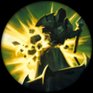
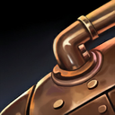

核心裝備
 黎安卓的折磨
黎安卓的折磨 海克斯科技火箭腰帶
海克斯科技火箭腰帶- 血書詛咒
 無限寶珠
無限寶珠 峽谷製造者
峽谷製造者

以下為本站 7.2d 校正後的標準配置；實戰仍需依敵方陣容調整。





技能優先：Q > E > W

施放技能累積熱能；進入危險禁區會強化基礎技能，過熱則提升普攻但暫時無法施法。
持續灼燒前方扇形區域，對近戰換血與清線都很強，危險禁區時傷害更高。
獲得護盾與跑速，危險禁區時兩者都會提升，適合進退與吸收主要傷害。
發射可充能的魚叉造成傷害與緩速，多次命中可持續限制敵人。
在地面鋪設燃燒帶，造成持續傷害與緩速，狹窄物件區能大幅分割戰場。
3技第一發減速 → 1技灼燒 → 3技第二發 → 2技護盾後撤
魚叉先減速提高一技完整命中率，第二發延長限制；二技用來吸收反打並調整位置。
4技斜切退路 → 2技加速護盾 → 3技減速 → 1技持續輸出 → 火箭腰帶追擊
大絕優先切斷撤退或支援路線，再開盾靠近；敵人被迫穿過燃燒帶時用魚叉與火焰持續壓制。
1技累積熱能 → 3技累積熱能 → 2技進入過熱 → 過熱強化普攻 → 持續普攻
在確認不需要立刻撤退時才主動過熱，技能打完後利用強化普攻收尾；面對硬控時不要把自己鎖進過熱狀態。
把熱能維持在危險禁區附近，讓一技與魚叉獲得強化。魚叉先減速再用一技灼燒，二技護盾用來吸收對手主要換血；不要在打野可能出現時讓自己過熱。
河道與物件坑是藍寶最強的戰場，大絕斜切敵方退路通常比直線丟在人群中央更有效。先用大絕分割陣型，再決定是否火箭腰帶貼近。
保持在能用魚叉與大絕影響戰場的位置，不必每次都貼臉。過熱前規劃最後一個技能，完成爆發後利用強化普攻收尾，避免在敵方反打時陷入無法施法。
對局名單是本站依英雄機制與目前配置整理的參考，不等同固定勝率。
中路優先處理爆發、控制與抗性問題；標準輸出核心不因單一威脅整套推翻。
觸發：對線或團戰有能直接貼近你的刺客／爆發核心，常在完成第一輪輸出前死亡。
女妖面紗補魔防並提供法術護盾，可阻斷對方第一段開戰。
骨甲降低接續傷害，適合換掉較貪輸出的副系符文。
觸發：敵方有多個關鍵硬控，會讓你無法安全站位或施放完整連段。
女妖面紗的法術護盾能先擋一次關鍵技能，讓法師保留施法空間。
觸發：敵方前排多，團戰需要你持續處理高生命目標，而不是只秒後排。
標準配置已經有持續傷害／穿透或高生命處理能力。
觸發：敵方治療、吸血或回復讓你的消耗與爆發很難真正壓低血線。
黑魔禁書能由魔法傷害穩定施加重創，適合法師與軟輔處理大量治療。
觸發：敵方核心已經針對你的主要傷害類型堆高物防或魔防。
你不是隊伍主要穿透來源，或標準配置已經有足夠百分比穿透／削抗。
提醒：「坦克多」看的是高生命前排；「抗性高」則是對方已經明確堆高物防／魔防，兩種情境不一定相同。
7.2a 中路第四批正式版：技能名稱與核心機制依 Riot Games 台灣《激鬥峽谷》官方英雄資料校正；版本基準採官方 7.2 與 7.2a 更新公告，出裝、符文與對局方向參考 7.2a 當前中路環境後整合。Tier 維持本站既有 46 位中路正式名單評級。｜v62：完整套用阿璃中路固定母版，中路 46/46 全數完成。
本站於 2026-08-27 依 Patch 7.2d 重新檢查此配置。 Tier、出裝、符文與對局屬於 Wild Rift Guide 的整理與分析，不是 Riot Games 官方推薦；版本改動後會再依官方公告與實戰資料校正。